Секретарь репетитора
SecRep для ученика
Как зарегистрироваться и добавить учителя
Попроси репетитора прислать ссылку-приглашение и открой её на телефоне. Если ты уже вошёл в SecRep, переходи сразу к подтверждению приглашения.
Войти или создать аккаунт
Впервые в SecRep? Нажми «Создать аккаунт». Для регистрации по почте укажи свой адрес, подтверди его шестизначным кодом из письма и введи имя и фамилию. На экране регистрации также можно выбрать Telegram или VK.
Аккаунт уже есть? Нажми «У меня уже есть аккаунт» и войди привычным способом.
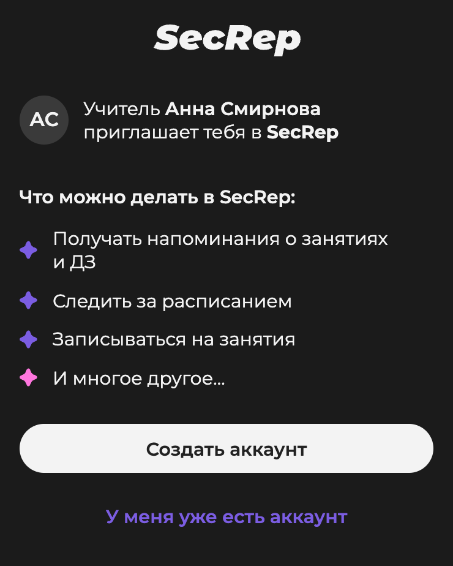
Если регистрируешься без приглашения, выбери «Я ученик» и нажми «Продолжить». Ссылку учителя можно открыть и после регистрации.
Принять приглашение
В окне «Приглашение» проверь имя репетитора и нажми «Принять». Откроется раздел «Учителя». Если окно не появилось, проверь список учителей. Если твоего репетитора там ещё нет, снова открой его ссылку, уже войдя в аккаунт.
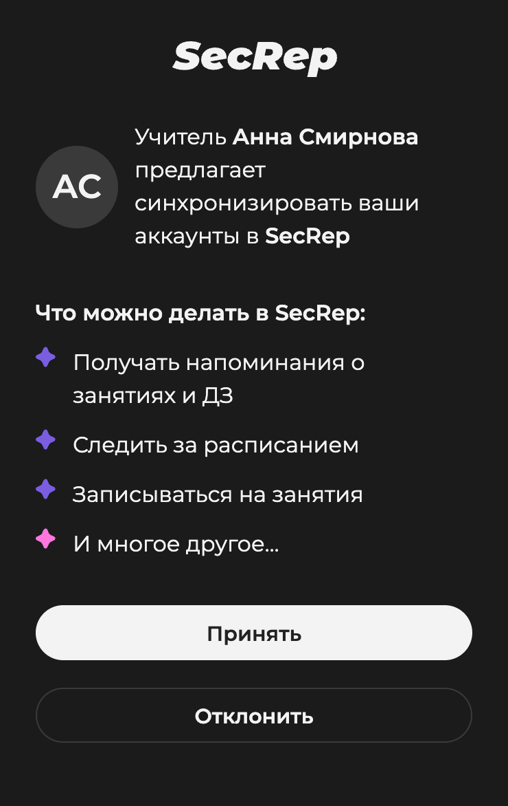
Как включить уведомления
В Telegram
Нажми на свой аватар вверху слева. В меню выбери «Активировать Telegram-бота».
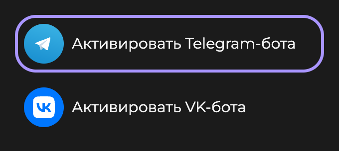
Нажми «Открыть в Telegram» и запусти бота. Если чат не открылся, нажми «Скопировать ссылку» и отправь скопированное боту.
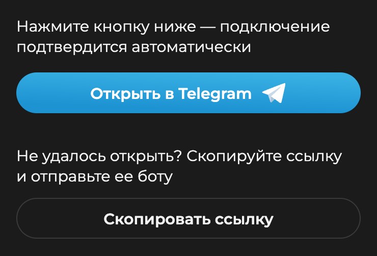


Во ВКонтакте
Нажми на свой аватар вверху слева. В меню выбери «Активировать VK-бота».
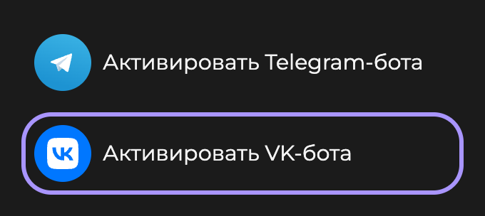
Нажми «Перейти в чат с ботом», затем «Начать». Нет кнопки «Начать»? Отправь боту «Старт».
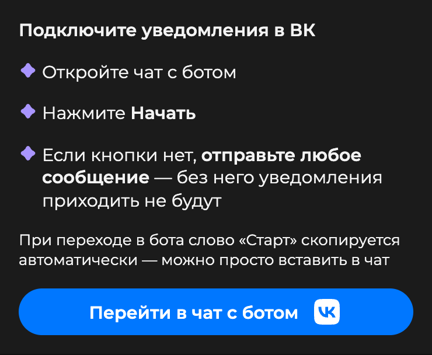


Пуши на телефоне
На Android открой SecRep. На iPhone запусти его с иконки на экране «Домой». Если иконки ещё нет, добавь её через Safari.
Нажми на свой аватар вверху слева. В открывшемся меню под переключателем темы нажми строку с колокольчиком «Push-уведомления».
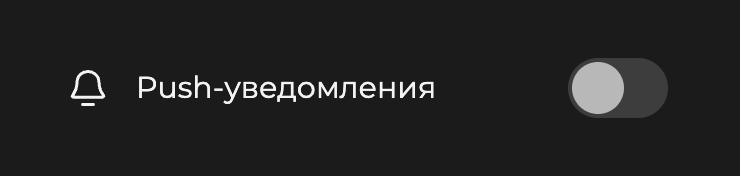
Если телефон запросит разрешение на уведомления, нажми «Разрешить». Когда пуши включены, ползунок справа.
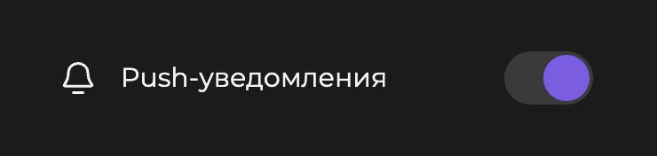


Как добавить SecRep на iPhone
Открой SecRep в Safari и нажми «Поделиться».
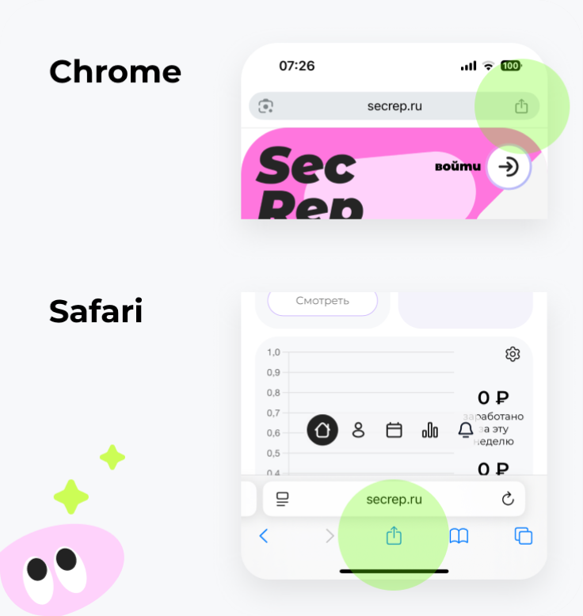
Выбери «На экран Домой».
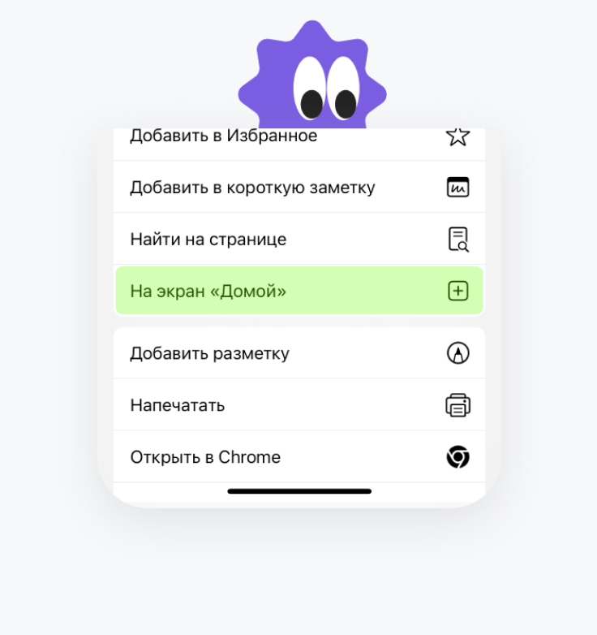
Нажми «Добавить» и открой SecRep с новой иконки.
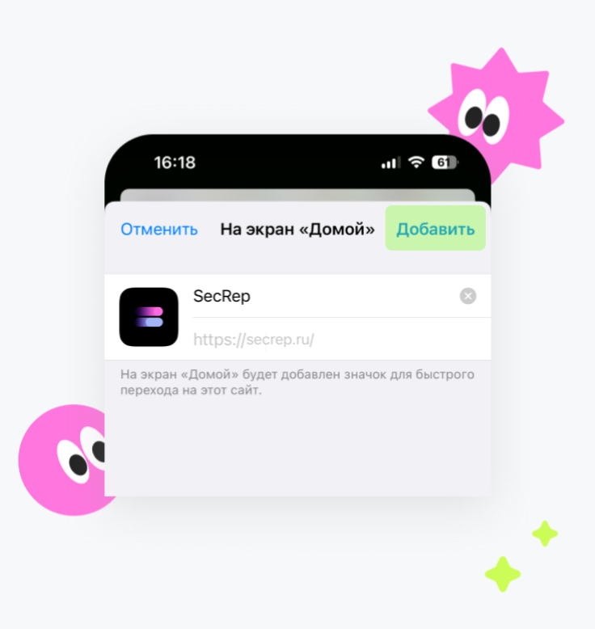


Теперь включи пуши в меню SecRep.
Где найти ссылки и заметки
В нижнем меню нажми «Учителя» — это вторая иконка слева, с силуэтом человека.
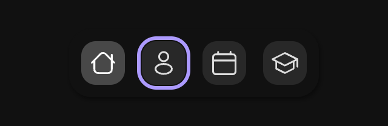
Найди своего репетитора в списке и нажми стрелку рядом с его именем. Откроется карточка учителя.
Видеозвонок и доска
В блоке «Полезные ссылки» нажми стрелку рядом с видеозвонком или доской.
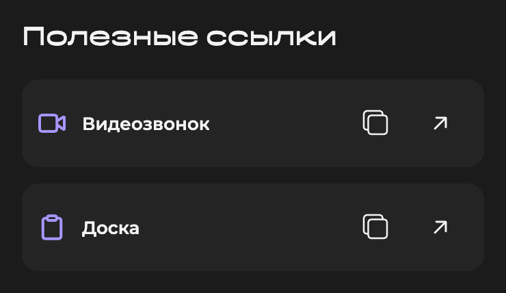
Материалы к занятиям
В «Библиотеке ресурсов» найди материал и нажми кнопку открытия рядом с ним.
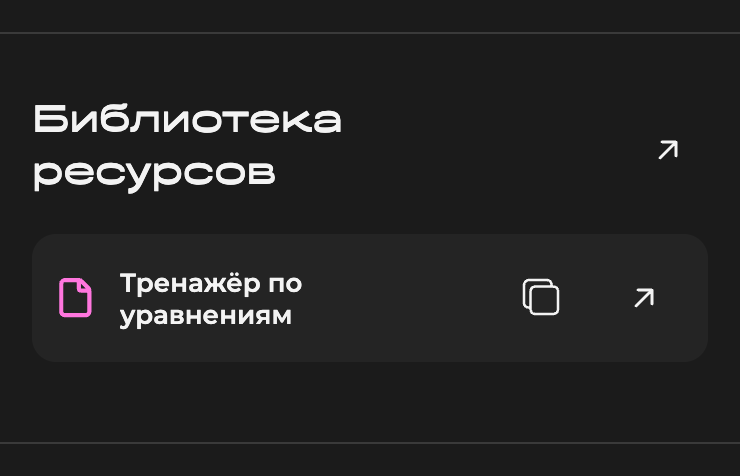
Заметка после урока
В блоке «Прошедшие уроки» нажми на урок с пометкой «Есть заметка». Под темой появится запись учителя.
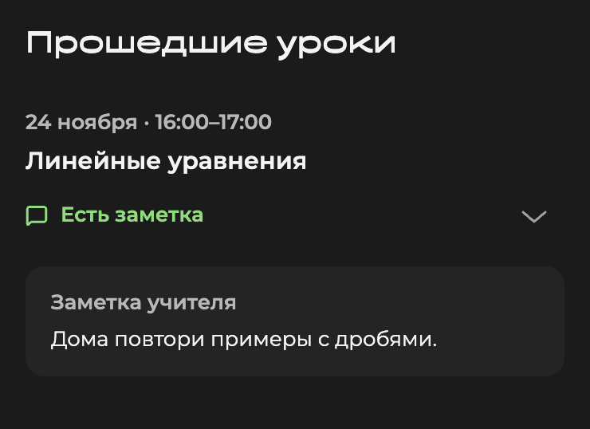
Как сдать домашку
В меню внизу экрана нажми крайнюю правую кнопку «ДЗ».
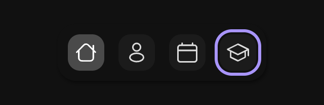
В разделе «Текущие» выбери задание.
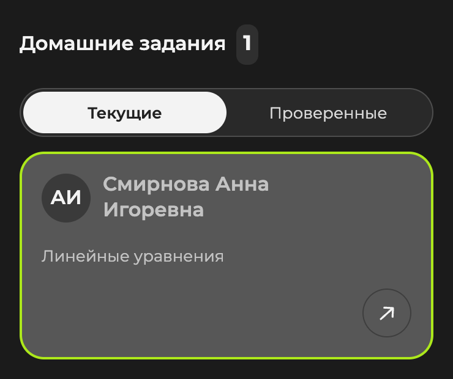
Открой условие. Если видишь кнопку «Приступить к ДЗ», нажми её.
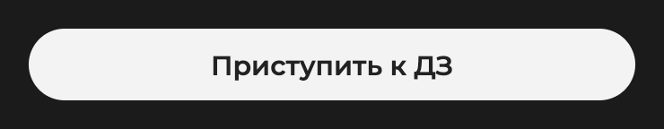
Запиши ответ и нажми «Отправить на проверку». Если SecRep попросит подтвердить отправку, нажми «Отправить».
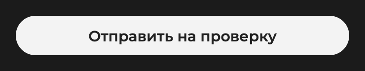
За результатом вернись в «Проверенные» и открой работу. Там же будет отзыв, если учитель его оставил.
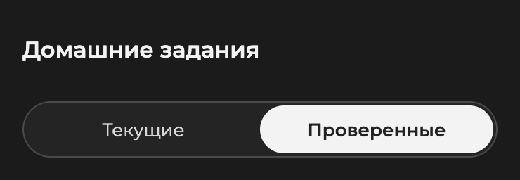